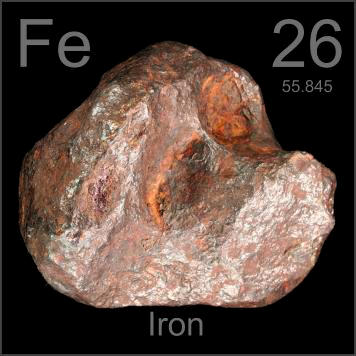

HOME
PREVIOUS
NEXT

Iron
Atomic Weight: 55.845
Density: 7.874 g/cm3
Melting Point: 1538 °C
Boiling Point: 2861 °C
This meteorite, part of one that fell in Xiquipilco, Mexico in ancient times, is made mostly of iron. Locals created iron tools from it for generations before the first samples made their way out in the 1700s.